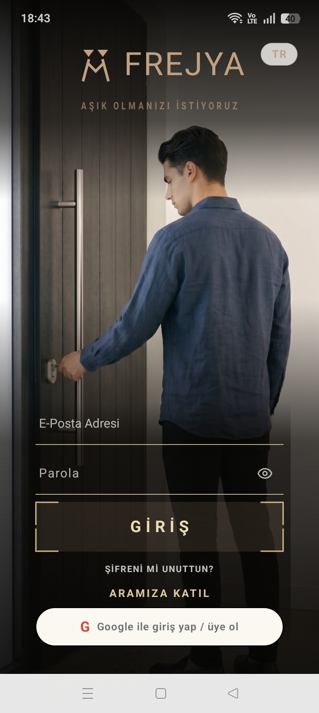

Önce söz, sonra yüz
İnsan,
bir fotoğraftan büyüktür.
Anonim tanışırsın: profil fotoğrafı baştan gizli kalır, karşılıklı sohbet ettikçe yavaşça açılır. Hızlı kaydırma yok; önce kişiyi tanırsın.
Manifesto
Frejya Manifestosu
Bir zamanlar bir insanı tanımak, mevsimler alırdı.
Şimdi bir saniye. Bir fotoğraf. Bir parmak kaydırması.
Biz buna inanmıyoruz.
Hızlı beğenilenin hızlı unutulduğuna,
tanınmadan sevilenin sevilmediğine,
ve bir yüzün bir insanı asla anlatmadığına inanıyoruz.
Frejya bir flört uygulaması değildir.
Frejya, bir kapı eşiğidir.
Burada yüzler bir anda görünmez.
Çünkü bir insan, bir fotoğraftan büyüktür.
Konuştukça tanırsın. Tanıdıkça görürsün.
Gördükçe kalırsın — ya da gidersin.
Ama bu kez, bilerek.
Diğerleri seni acele ettirir.
Diğerleri seni bir fotoğrafta yargılatır.
Diğerleri sana onlarca seçenek sunar — ama hiçbirini tanıma fırsatı vermez.
Frejya, sana zaman tanır.
Çünkü zili çalmak kolaydır.
İçeri davet edilmek, bambaşka bir şeydir.
Burada anlık beğeni yok.
Burada sahte profil, kurgu hayat, oyuna gelen kalp yok.
Burada acele yok.
Burada bir kapı var —
ve doğru anahtar bulunduğunda,
yavaşça, açılacak.
Çünkü artık bir gece değil, bir sabah arıyoruz.
Bir kahve fincanının iki yanı.
Bir anahtarın iki sahibi.
Bir evin içindeki iki nefes.
Eğer sen de yorulduysan
hızlı olandan, yüzeysel olandan, sahte olandan —
hoş geldin.
Burada bir yuva kurulur,
bir oyun değil.
Frejya. Aşkın eşiğinde.
Nasıl Çalışır
Üç adımda gerçek bir bağ
Kendini anlat
Derinlik testini çöz, ruhani hayvan avatarını seç, sesini bir perdeyle tanıt.
Zile bas
Keşfet ekranında biriyle eşleş, kapısının zilini çal. Kabul ederse sohbet açılır.
Kazıyarak keşfet
Sohbet ettikçe perdeyi kazı; emek verdikçe karşındaki kişi ortaya çıkar.
Neden Frejya
Tanışmanın sakin hâli
Anonimlikle başlar
Profilini bir biyografi değil, psikolojik derinlik testi anlatır. Kendini bir hayvan avatarı, takma ad ve maskelenmiş bir ses tonuyla tanıtırsın.
Sohbet ettikçe keşfedersin
Eşleştiğin kişinin fotoğrafı karanlık bir perdenin arkasında. Karşılıklı sohbet ettikçe perdeyi azar azar kazıyıp onu ortaya çıkarırsın.
Tek sohbet, tam odak
Frejya'da aynı anda yalnızca bir kişiyle sohbet edersin. Dikkat dağınıklığı yok — karşındaki kişiye gerçekten odaklanırsın.
Hiyeroglif paylaşımlar
Akışta metin yoktur. Düşünceni ikonlardan oluşan sembolik bir dille paylaşırsın. Frejya Aura — sessiz ama anlamlı bir alan.
Zil çal
Birini beğendiysen kapısının zilini çalarsın. O da senin zilini duyar — ve dilerse kapıyı açar.
Güvenli ve saygılı
Her profil fotoğrafı yapay zekâ ile denetlenir. Şikayet ve engelleme her an elinin altında. İstediğin an hesabını tamamen silebilirsin.
Şifresiz, güvenli giriş
İlk girişten sonra parmak izi veya Face ID ile saniyede gir. Biyometrik veri telefonundan çıkmaz, sunucuya gitmez — istemediğin an şifreyle girersin.
Uygulamadan
Frejya'nın içinden kareler



Sık Sorulanlar
Merak edilenler
Frejya ücretsiz mi?
Evet, Frejya'yı ücretsiz kullanabilirsin. İleride bazı ek özellikler için isteğe bağlı premium üyelik sunulabilir.
Fotoğrafım ne zaman görünür?
Eşleştiğin kişinin fotoğrafı başta gizlidir. Karşılıklı sohbet ettikçe perde yavaşça açılır — tanıştıkça görürsün.
Gerçekten anonim miyim?
Başta bir hayvan avatarı, takma ad ve maskelenmiş ses tonuyla tanışırsın. Gerçek fotoğrafın yalnızca sohbetle açılır.
Mesajlarım ve verilerim güvende mi?
Mesajlar uçtan uca şifrelenir; Frejya ekibi dahil kimse içeriği okuyamaz. Tüm profil fotoğrafları yapay zekâ ile denetlenir.
Yaş sınırı var mı?
Frejya yalnızca 18 yaş ve üzeri içindir.
Aynı anda kaç kişiyle sohbet edebilirim?
Aynı anda yalnızca bir kişiyle — böylece karşındaki kişiye gerçekten odaklanırsın.
Acele etme.
İyi bir tanışma zaman ister. Frejya 18 yaş ve üzeri içindir.